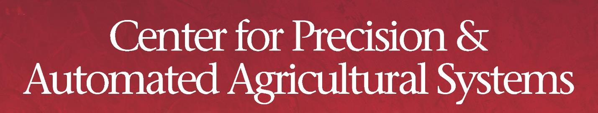

|
Yinghui Wu Theodore L. and Dana J. Schroeder Associate Professor Department of Computer & Data Sciences Case School of Engineering Case Western Reserve University |
Olin 515 2101 Martin Luther King Jr Dr, Cleveland, OH 44106 Office: 216.368.8829 Email: yxw1650_at_case_dot_edu Homepage: https://yinghwu.github.io/ |
Home | Teaching | Research | Services | Students | Publications | Talks | Bio/CV
Research Interests:
- Knowledge and Data Management, Data Systems, Information Network, Information quality
- Domain-specific
Data systems
(material science, cyber-energy systems, smart environment, social networks/Web, and cyber security)
Projects
- Knowledge
Modeling,
Integration, Discovery and Quality
- Error detection & Repairing in Information Networks
- Domain-specific Knowledge
Management
- CRUX - material science
(XRD) data resource management and recommendation platform
- PV-stGNN - spatiotemporal
modelling and predictive analysis for solar energy/PV
systems
- Knowledge and Data Exploration
- Exploration by Questions, Examples and Summaries
- Explainable Exploration ('Why?'' and ``What-if''
analysis)
- Network
Anomaly
& Association Pattern Analysis
- Association Analysis in Graphs - models, detection, and
applications
- Spatiotemporal Correlation and Cascading Analysis
- Large-scale
Data
Processing:
- Approximate Query Processing
- Parallel and Distributed (Graph) Query Processing with
scalability guarantees
- GEDet: Multi-scenario Error detection in Graphs with a few
examples
- Kronos and Kronos++: Dynamic Knowledge-based Event Analysis
in Smart Power Grid
- Interactive data exploration with keywords (GExp), summaries
(GSum),
examples (NAVIGATE) and data constraints (GRIP)
- Event analysis: Detection, Localization and Tracking (Percolator, BEAMS) in dynamic networks
- GRAPE: parallelization of sequential graph computation


